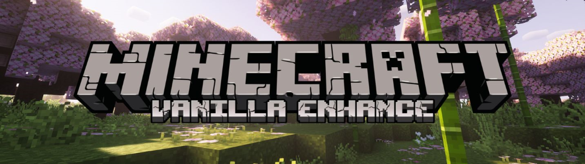
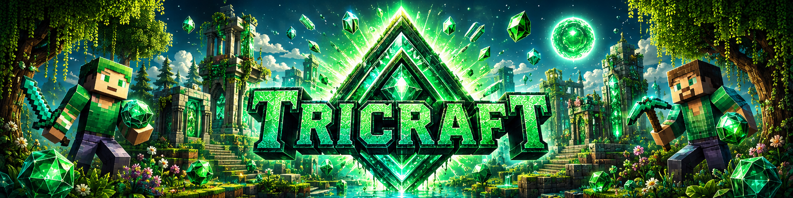

Minecraft Hub
Java · Bedrock · Triforce · Triforce 2 · Triforce (Home) — five servers, live status
Servers — click banner or address to copy

Java Edition
wish-midwest.gl.joinmc.link

Bedrock Edition
wish-midwest.gl.at.ply.gg:27443

Triforce
oddohome.asuscomm.com:25566

Triforce 2
oddohome.asuscomm.com:25565
Triforce (Home)
paris-pursuant.gl.joinmc.link
Setup Guides
Vanilla Servers — No Setup
Java and Bedrock are vanilla — no mods required. Just connect and play.
| Server | Address |
|---|---|
| Java | wish-midwest.gl.joinmc.link |
| Bedrock | wish-midwest.gl.at.ply.gg:27443 |
Triforce Servers — Mod Setup
- Install CurseForge App.
- Browse Minecraft modpacks and install the one matching the Triforce server.
- Download TriforceModSync.exe, run it, Browse to your instance's
modsfolder, then hit Check and Sync to match the server automatically. - Log in with your Microsoft account.
- Connect to paris-pursuant.gl.joinmc.link (Triforce Home), or oddohome.asuscomm.com:25566 / :25565.
Re-run TriforceModSync.exe (Sync) whenever the server updates its mods — it only downloads what changed.
Prerequisites
- Docker + Docker Desktop installed
- A
docker-compose.yml(or add to existing stack) - playit.gg account (free) — external access without port forwarding
docker-compose — Java Server
minecraft-java:
image: itzg/minecraft-server:latest
container_name: minecraft-java
restart: unless-stopped
environment:
- EULA=TRUE
- TYPE=PAPER
- MEMORY=4G
- DIFFICULTY=normal
- MODE=survival
- ENABLE_RCON=true
- RCON_PASSWORD=yourpassword
- RCON_PORT=25575
ports:
- "25565:25565"
volumes:
- ./minecraft-java:/datadocker-compose — Bedrock + Playit
minecraft-bedrock:
image: itzg/minecraft-bedrock-server:latest
container_name: minecraft-bedrock
restart: unless-stopped
environment:
- EULA=TRUE
- GAMEMODE=survival
ports:
- "19132:19132/udp"
volumes:
- ./minecraft-bedrock:/data
playit:
image: ghcr.io/playit-cloud/playit-agent:latest
container_name: playit
restart: unless-stopped
network_mode: host
environment:
- SECRET_KEY=${PLAYIT_SECRET_KEY}Setup Steps
- Sign up at playit.gg → Agents → Add Agent → copy secret key into
.envasPLAYIT_SECRET_KEY - Run
docker compose up -d— first boot downloads server jar and generates world (~2 min) - In playit dashboard → Tunnels → Add Tunnel: Java = TCP port 25565, Bedrock = UDP port 19132
- Playit assigns public addresses (e.g.
wish-midwest.gl.joinmc.link)
Verify & Key Files
# Check server is up
docker logs minecraft-java --tail 20
# look for: Done (Xs)!
# Test RCON
docker exec minecraft-java rcon-cli list| Path | Purpose |
|---|---|
| minecraft-java/server.properties | Game settings |
| minecraft-java/world/ | World data |
| minecraft-java/plugins/ | Paper plugins |
| minecraft-java/craftscripts/ | WorldEdit JS scripts |
WorldEdit Setup
- Download WorldEdit jar → drop in
minecraft-java/plugins/ - Download Rhino js.jar → drop in
minecraft-java/plugins/WorldEdit/ - Restart:
docker restart minecraft-java - Run scripts in-game with
//cs scriptname
Server Management — local network only
Schematic Tools
NBT → Schematic Converter
Convert Minecraft structure .nbt files or Litematica .litematic files into Sponge-format schematics that WorldEdit / FAWE can //schem load. Pick multiple files for batch — you'll get a zip back.
Working offline / want a folder-watcher?
Download schem_batch_convert.py
— drop into a folder of NBT files, run python schem_batch_convert.py, get a _converted/ subfolder with .schem files plus a _results.txt log.
Drop .nbt / .litematic files here, or click to choose.
Resources